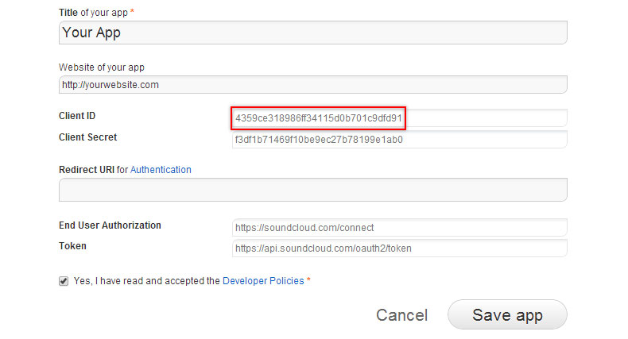
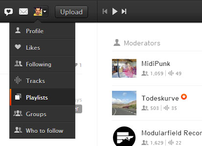

Updated: 12/04/2018
By: Emanuele Manco
Profile: codecanyon
Thank you for purchasing my app. If you have any questions that are beyond the scope of this help file, please feel free to email via my user page contact form here. Thanks so much!
Before doing anything you need to work on a webserver. Go to apachefriends.org and install XAMMP which will enable you a local development environment. Of course you can use any kind of Apache server. Once you've done copy the root inside the htdocs folder and access it from your browser to see it running. If you try accessing it locally it simply won't work.
*Mandatory to get the player running.
If you want to kickstart your work, just copy the css, fonts, js, json, swf, and utils folder and you're ready to go. Arrange the DOM and initialize the script to see it in your page. You'll need the utils folder only when you're using SoundCloud APIs and need to have a consistent equalizer animation. It works also without it.
GearPlayer needs just a little bit of code in your DOM Structure. Take your time and organize your project by following this userguide. It will be easy once you understand how it works.
First thing you need to do is wrapping your existing body content inside a div and apply to it the stage class, like this:
<div class="stage">
<!-- your content here -->
</div>
This is needed for the player for performance reasons. When Gear Player is visible it hides the stage div from the DOM, getting this way more rendering memory and a better experience overall. Of course you can also omit this, but I strongly suggest you to organize your page this way to avoid glitches and unwanted issues.
Then, append the Gear Wrapper right below the stage. Copy and paste the following code:
<div class="gearWrap"> <div id="gearContainer" class="gear" data-gear="json/setup.json"></div> </div>
Keep it like this since there are references in the provided stylesheets. You can alter the data-gear value if you wish so. Just keep sure the JSON path is correct.
In case you need to include the player as an inline element, all you need to do is adding the "inline" class to the container. The player will adapt itself to the parent node in the DOM.
<div class="gearWrap inline"> <div id="gearContainer" class="gear" data-gear="json/setup.json"></div> </div>
Feel free to checkout the provided example in the root that showcases the inline mode.
You can summon new albums inside your existing website to any DOM Object. The only thing you'll need to do is using the data-gearPlaylist attribute. Here's an example:
<div data-gearPath="json/album.json">
Whenever the user clicks the player will clear the existing album and load the new one. It can be applied to any DOM Object. Once clicked the Player will add to the container a "playing" class which comes handy if you need to style your status in the page.
The DOM is ready, you just need to include the stylesheet and javascript files.
Copy the whole css folder inside your root. You can safely remove or overwrite styles.css - all the other files should be kept. The only one you'll need to embed in your page is called "gear.css" and you should include it in your head tag like this:
<link link rel="stylesheet" href="css/gear.css">
I bet you're wondering why you should keep the other stylesheets? Well it's easy to explain. The fonts folder contains icons used inside the player and are needed, while flashblock.css is used by SoundManager2 whenever Flash is blocked by some extension.
Of course you're free to use the same icons for your project or load new ones as you like.
The stylesheet was built with LESS, a dynamic Stylesheet Language. You'll find compressed css files in the css folder, those are just for deploying. The ones used for production are located inside the less folder.
I suggest you to build a new custom stylesheet and overwrite the rules using a browser inspector like Firebug which will kickstart your work. Though if you really need to edit those files you can do it with LESS. I recommend using WinLess for Windows or LESS.app for Mac. These compilers will generate for you a compressed styles.css file which is stored inside the css folder.
Once your DOM is ready and you have successfully included the gear stylesheet in your head you have to include the following javascript files before the end of the body:
<script src="//cdnjs.cloudflare.com/ajax/libs/jquery/2.2.0/jquery.min.js"></script> <script src="http://connect.soundcloud.com/sdk.js"></script> <script src="js/jquery.gearplayer.libs.min.js"></script> <script src="js/jquery.gearplayer.min.js"></script>
You should at first include jQuery if you don't have already. I put the CDN version to benefit from caching. You can use any flavour of jQuery as you like as long you include it before the Gear Player scripts.
The SoundCloud javascript is needed only if you're planning to use SoundCloud for your music. You can remove it safely if you don't need this feature. We'll see later how to benefit from their APIs.
The last two files are mandatory: the first one is a collection of the following libraries: Modernizr, PreloadJS, Greensock, Raphael.js, jQuery Color, jQuery Mousewheel, SoundManager2. The second one is Gear Player, the main script that calls the mentioned libraries.
Despite the minified versions of the scripts, you can still optimize the files further by gzipping them. You'll find an htaccess file in the root which is already compiled to enable your server to do so. You'll find in the js folder the gzipped versions of all scripts with the gz extension.
So, you arranged the DOM and included all needed files. Though the player sits there without doing anything, isn't it? Of course you need to initialize it! It's meant that way, to keep give you more control over the script. You can wake it up with the following javascript:
$(document).ready(function(){
$('.gearWrap').gearPlayer();
});
You can also call it inside your own app script as long it's called when the DOM is ready. Though even a dirty inline script tag will do the job if you want to.
There is a neat app.js included that shows you how to organize your stuff in the correct way. It's not needed to get it working though. Just use the script above and it will initialize. It's up to you.
You'll find a few files inside the json folder. These are loaded at runtime from the player. The one loaded with the gear wrapper contains several setup options which will be used to control most of the functions of the player.
Some of these options can be overwritten when a new album is loaded. I'll briefly explain each one here so you can play safely.
This part creates the playlist of each album. It's pretty simple to set up.
Gear Player comes with a few extra methods for your special needs which might come handy when your project is built with ajax and needs a little more control. The following methods are supported.
var g = $('.gearWrap').gearPlayer();
g.ready(); // triggered when the player is ready
g.show(); // shows the player interface
g.refresh(); // scans for new albums in the DOM
g.destroy(); // gets rid of the player
g.volume(100); // sets the volume of the player, n can be from 0 to 100
g.change(); // triggered whenever a change happens, it shows the event as argument in the callback
g.play(0); // plays the track when paused or initializes a new one when a number is set as argument
g.pause(); // toggles pause once
g.album('json/new.json'); // launches a new album with the provided json url
g.deeplink('json/new.json'); // overwrites the setup json and is meant for deeplinks
g.stayAwake(true); // forces mobile devices to avoid dimming the screen
g.loop(true); // overwrites loop flag
g.specialChars(true); // allows special characters to be displayed by replacing vectors with text
g.get('volume'); // returns the current level of the volume
g.get('paused'); // returns the pause status
g.get('title'); // returns the album title being played
g.get('author'); // returns the author of current album
g.get('deeplink'); // returns deeplink string
g.get('total'); // returns total number of album tracks
g.get('current'); // returns the current song number
g.get('open'); // returns the open status of the gui
g.get('entries'); // returns the playlist array
Let's say you want to show the player by clicking on something on your page. Here's how you can do it.
var g = $('.gearWrap').gearPlayer();
g.ready(function(){
// player is ready and we can apply our events
$('.button').click(function(e){
e.preventDefault();
g.show(); // this shows the player interface
});
});
Are you building an AJAX Project? No problem. Here's how you can handle it.
$.ajax({ url: "page.php", context: document.body }).done(function() {
g.refresh(); // this scans the whole document again for new albums and adds them to its routine
});
Gear Player supports the SoundCloud API natively and allows you to organize your albums directly from there. To do this you need to get a key called Client ID. First thing you need to do is to sign up to soundcloud.com and once you have your own profile go to the developers site on developers.soundcloud.com and click on "Register a new app" or go directly to soundcloud.com/you/apps/new. You'll land on a page like the one below here.
Grab the Client ID and copy it inside your JSON Setup as "soundcloudClientID" parameter. Oh, just in case you're thinking to copy the showcased one... it won't work! You have to generate your own code. Keep sure you save the app to keep it working.
Now you can create your own sets by selecting playlists.
They will have a structure like this: https://soundcloud.com/you/sets/album.
Copy the whole link inside the JSON Setup as "soundcloudSet". Do the same for each album.
Once you got your neat Client ID you can create as many SoundCloud Playlists as you want. You can even mix them with normal local MP3 playlists with no issues. Here's an example on how it will look:
{
"albumCover":"img/thumbs/03.jpg",
"albumTitle":"Lost Sounds",
"albumAuthor":"Creative Commons",
"soundcloudEnabled":true,
"soundcloudClientID":"yourClientID",
"soundcloudSet":"https://soundcloud.com/you/sets/yourset",
"soundcloudOverwrite":true,
"autoPlay":true,
"shuffle":true
}
The player uses a proxy to grab the real link of each soundcloud song which is a php file located inside the utils folder. Keep sure you have that file on your server! If you don't the equalizer might act funny since it can't have direct access to it.
In order to get access to the meta data of your music stored on SoundCloud you'll need to communicate with their servers through HTTPS which is now mandatory. So you'll need to store your site on a place where the same protocol happens. You can get a free certificate on startssl.com
By the time of writing the equalizer works only on non mobile devices with the Adobe Flash Player installed.
I already asked the author of SoundManager 2 about Web Audio support to ditch Flash. It's still too early, but I will follow the developments and keep the player up to date.
The default rendering mode of the Gear Player use a vector method offered by Raphael.js that allows a smooth and crisp text to be displayed on the sectors in any angle. There is only one downside: it does support only the characters included in the embedded font. So, if you need to use special characters you need to enable a flag that will generate for you simple text fields instead of the vector objects.
You'll need to add the specialChars flag to change how the fields around the sectors are rendered. It is set to false by default.
var g = $('.gearWrap').gearPlayer();
g.specialChars(true);
You can style them as you wish through a custom stylesheet and the content can be manipulated too directly in the DOM.
The following libraries were used:
The following icons were used:
Included photos courtesy of Envato Asset Library.
Want to update your project? Just overwrite both css and js folder and you're set!
Once again, thank you so much for purchasing this app. As I said at the beginning, I'd be glad to help you if you have any questions relating to this app. No guarantees, but I'll do my best to assist. If you have a more general question relating to the apps on Codecanyon, you might consider visiting the forums and asking your question in the "Item Discussion" section.
Sincerely, flashedge